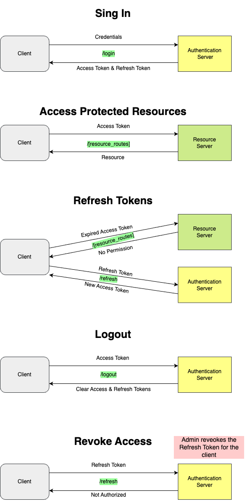

Updated ( 2023-02-13 )
MySite> HTTP & REST Api> Tokens
- sessions are used to identify different clients, for this we use session tokens
- session tokens are generated by the server and issued through cookies to the client
- step 1: client logs in with password
- step 2: server identifies the client then issues a session token through cookies
- step 3: after this the client only sends its token, so the server verifies the identity of the client through the session token (no need to login again, server can control for how long the client is logged in, etc..)
- a JWT (JSON Web Token) is basically an advanced session token, it has serveral advantages over a normal session token
- JWT Tokens contain the client's identification data, encoded with the server's private key, signed with a hashing algorithm and not stored by the server (this way multiple servers (having the same key) can identify the same client)
- JWT Tokens contain timing data so we can configure their expiration, the expiration can be checked on token verifyication (ex: jwt.verify())
- JWT is composed of 3 parts:
Hearder: contains basic info (hashing algorithm, etc...)
Body: contains the client's Id, expiration, etc...
Signature: header + body encoded with the secret key
- the client sends its JWT token in the Authorization: Bearer jswToken header
- the OAuth 2.0 (Open Authorization) is an Authorization protocol, the user can delegate some authorization for us, this means we can do certain stuff in hehalf of him (on the 3rd party app)
- OAuth 2.0 is an Authorization protocol meaning that we can do certain stuff in the behalf of the user but we don't know anyting about the user's credentials
- OAuth 2.0 terminology:
- Resource Onwer: the user owning resources on a 3rt party app
- Authorization Server: the 3rt party server that deals with all authorizations
- Resource Server: the 3rt party server that manages the resource owner's resources
- Authorization Grant: the authorization code that we can exchange for an Access & Refresh token
- Redirect URI: URL where we want to recevies the Authorization Code or Access Tokens from the 3rd party app
- Authorization Scope: limited authorization categories (scopes) defined by the 3rd party app
- Response Type: the OAuth type we whant to receive (code = Authorization Code / token = Access Token)

- Open Id Connect is an Authentication protocol, it's basically an extension of OAuth 2.0
- when when sending the redirect URI request we specify openid as scope (is that simple)
- when exchanging the Authorization code for an Access token we also get an Id token (JWT token containing the user's id)
- CSRF (Cross Site Request Forgery) tokens protect us againts cross site attacks (attacker making requests in the victim's behalf)
1) the server generates a unique CSRF token and sends it to the client
2) the client includes the CSRF token as a form field in all form requests
3) the server receives the CSRF token in the form and compares with the session Id (or does some other security check with it) in order to make sure tha the form request is legit
- the security provided by the CSRF token is that the attacker cannot get the CSRF token from the form request
- the Access Token is usually a short lived token (5 - 30 minutes), it is used to access the resource server after logged in
- the Refresh Token is kept by the Authentication Server, it is used to issue a new Access Token or can be used to forcefully revoke Client Authentication
- talking to the Authentication server happens on the back channel (highly sercure), talking to the Resoruce Server happens on the front channel (less sercure)
